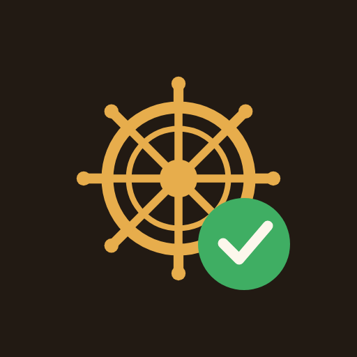

Tasks, projects, goals and your real calendar, organized by the areas of your life. Pick one area and everything else goes quiet.
Create your account Free while it's early. Works best added to your phone's Home Screen.What it does
Split everything into the areas of your life. Personal, work, family. Tap one and the whole app narrows to it, so "I'll give the next hour to work" is something you can actually do instead of something you say.
What needs my attention right now. Today and overdue, your priorities, projects in flight, goals, and what you touched last. Nothing to configure.
Bring in your calendars and see meetings and to-dos together, so you plan against the time you actually have. Double-booked slots get flagged, and an event on two calendars shows up once.
Plain questions about your own schedule, answered from your real events.
"Is there a five day window in October I could take off, including a weekend?"
"When is my next dentist appointment?"
Dump everything on your mind in one box and it comes back as clean to-dos, projects and ideas that you approve before anything is saved. Snap a photo of a list and it reads it.
Save a checklist once and spin it up again in a tap. Packing for a trip, a weekly review, whatever you redo often.
Getting started
Tap the button below and create your account with an email and password.
Open it in Safari or Chrome on your phone, then Share → Add to Home Screen. It behaves like a real app from there.
Start with one brain dump. Everything else can wait.